Last updated: 2022-04-25
Checks: 6 1
Knit directory: 2022_MPSIII_3mBrainRNAseq/
This reproducible R Markdown analysis was created with workflowr (version 1.6.2). The Checks tab describes the reproducibility checks that were applied when the results were created. The Past versions tab lists the development history.
The R Markdown is untracked by Git. To know which version of the R Markdown file created these results, you’ll want to first commit it to the Git repo. If you’re still working on the analysis, you can ignore this warning. When you’re finished, you can run wflow_publish to commit the R Markdown file and build the HTML.
Great job! The global environment was empty. Objects defined in the global environment can affect the analysis in your R Markdown file in unknown ways. For reproduciblity it’s best to always run the code in an empty environment.
The command set.seed(20220423) was run prior to running the code in the R Markdown file. Setting a seed ensures that any results that rely on randomness, e.g. subsampling or permutations, are reproducible.
Great job! Recording the operating system, R version, and package versions is critical for reproducibility.
Nice! There were no cached chunks for this analysis, so you can be confident that you successfully produced the results during this run.
Great job! Using relative paths to the files within your workflowr project makes it easier to run your code on other machines.
Great! You are using Git for version control. Tracking code development and connecting the code version to the results is critical for reproducibility.
The results in this page were generated with repository version b4f1f28. See the Past versions tab to see a history of the changes made to the R Markdown and HTML files.
Note that you need to be careful to ensure that all relevant files for the analysis have been committed to Git prior to generating the results (you can use wflow_publish or wflow_git_commit). workflowr only checks the R Markdown file, but you know if there are other scripts or data files that it depends on. Below is the status of the Git repository when the results were generated:
Ignored files:
Ignored: .DS_Store
Ignored: .Rapp.history
Ignored: .Rproj.user/
Ignored: data/.DS_Store
Ignored: data/R_objects/
Ignored: data/R_objetcs/
Untracked files:
Untracked: analysis/QC.Rmd
Untracked: analysis/analysis.Rmd
Untracked: analysis/explorationCQN.Rmd
Untracked: data/RNASeqMetaData.xlsx
Untracked: data/fastqc_align/
Untracked: data/fastqc_dedup/
Untracked: data/fastqc_raw/
Untracked: data/fastqc_trim/
Untracked: data/featureCountsLL/
Untracked: data/featurecounts/
Untracked: data/gene_sets/
Untracked: data/starAlignlog/
Untracked: data/v4.2.1_geneinformation.tab
Untracked: data/~$RNASeqMetaData.xlsx
Unstaged changes:
Modified: analysis/_site.yml
Note that any generated files, e.g. HTML, png, CSS, etc., are not included in this status report because it is ok for generated content to have uncommitted changes.
There are no past versions. Publish this analysis with wflow_publish() to start tracking its development.
library(tidyverse)
library(magrittr)
library(readxl)
library(ngsReports)
library(AnnotationHub)
library(pander)
library(scales)
library(pheatmap)
library(ggpubr)
theme_set(theme_bw())# I onrmally use annotationHub to get the gene information. However, here, I am using the updated zebrafish transcriptome data from lawson et al ELife (discussed later). This file below is from here
# https://www.umassmed.edu/lawson-lab/reagents/zebrafish-transcriptome/
geneInfoLL <- read_tsv("data/v4.2.1_geneinformation.tab") %>%
mutate(gene_id = LLgeneID) %>%
column_to_rownames("LLgeneID")
# Keeping the annotation hub code here just i case
# ah <- AnnotationHub() %>%
# subset(species == "Danio rerio") %>%
# subset(rdataclass == "EnsDb")
#
# ensDb <- ah[["AH83189"]] # for release 101, latest version and the alignment
# grTrans <- transcripts(ensDb)
# trLengths <- exonsBy(ensDb, "tx") %>%
# width() %>%
# vapply(sum, integer(1))
# mcols(grTrans)$length <- trLengths[names(grTrans)]
# gcGene <- grTrans %>%
# mcols() %>%
# as.data.frame() %>%
# dplyr::select(gene_id, tx_id, gc_content, length) %>%
# as_tibble() %>%
# group_by(gene_id) %>%
# summarise(
# gc_content = sum(gc_content*length) / sum(length),
# length = ceiling(median(length))
# )
# grGenes <- genes(ensDb)
# mcols(grGenes) %<>%
# as.data.frame() %>%
# left_join(gcGene) %>%
# as.data.frame() %>%
# DataFrame()# Metadata was colleted during sample prep.
meta <-
read_excel("data/RNASeqMetaData.xlsx", sheet = "SAGC AB1 batch") %>%
na.omit() %>%
mutate(genotype = case_when(
genotype == "wt" ~ "WT",
genotype == "het" ~ "sgsh/+",
genotype == "naglu hom" ~ "MPS-IIIB",
genotype == "sgsh hom" ~ "MPS-IIIA"
) %>%
factor(levels = c("WT", "sgsh/+", "MPS-IIIA", "MPS-IIIB"))
)Here, I will assess the quality of the RNA-seq data for the sgsh I388Ter vs naglu A603fs experiment on zebrafish 3m old brains.
Total RNA was purified from the brains of individual fish. The tail end was used for gDNA extraction and PCR genotyping. The total RNA was DNase treated (to remove any genomic DNA which was carried over from the RNA extraction), then delivered to SAGC for polyA+ library preparation and sequencing using the MGI DNBSEQ technology.
The sequencing was performed over four lanes which were subsequently merged. This was done using the merge.sh script shown below.
I will use the ngsReports package to combine and visualise the fastqc results.
fastqc_raw <- list.files(
path = "data/fastqc_raw",
pattern = "zip",
recursive = TRUE,
full.names = TRUE) %>%
FastqcDataList()The total number of reads ranged between 100,246,141 and 132,483,757 reads. Note that the number of reads in the R1 file indeed equals to the number of reads in the R2 file.
readTotals(fastqc_raw) %>%
mutate(Read = case_when(
grepl(Filename, pattern = "_R1") ~ "R1",
grepl(Filename, pattern = "_R2") ~ "R2"
),
ULN = str_remove(Filename, "_S[0-9]+_merged.+")
) %>%
left_join(meta) %>%
ggplot(aes(x = ULN, y = Total_Sequences, fill = Read)) +
geom_col(position = "dodge") +
coord_flip() +
scale_fill_viridis_d(end = 0.8) +
facet_wrap(~genotype, scales = "free_y", ncol = 1, strip.position = "right")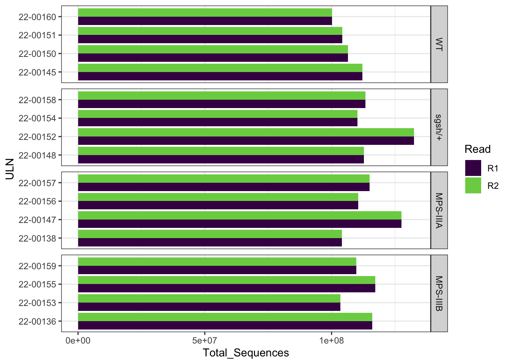
Looks all good to me. The average read quality is always over 25.
plotBaseQuals(fastqc_raw)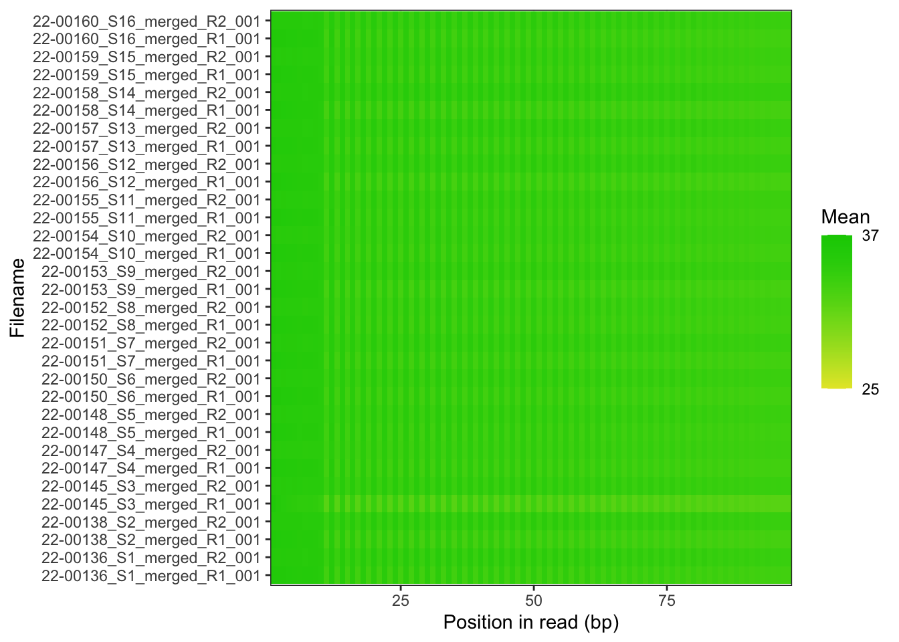
All samples have similar GC content, and the distribution looks similar to what we normally obserce in zebrafish brains. Therefore, no issues are present.
plotGcContent(
x = fastqc_raw,
plotType = "line",
gcType = "Transcriptome",
species = "Drerio",
usePlotly = F
) +
theme(legend.position = "none")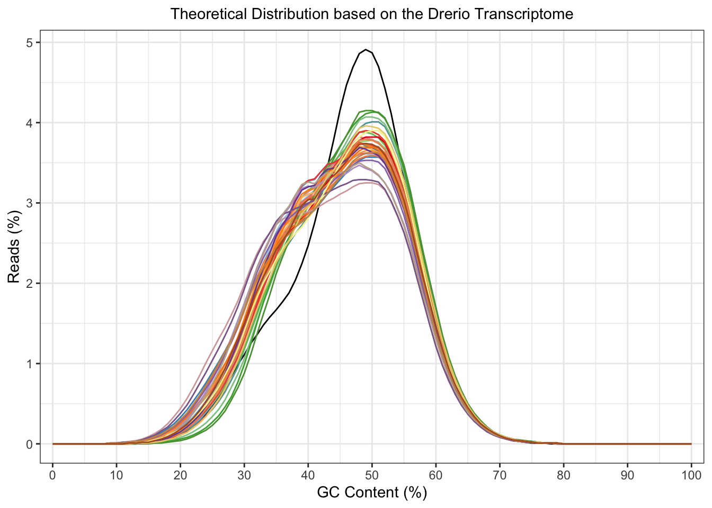
No over-represented sequences are present in this dataset (only in the neg control libraries)
getModule(fastqc_raw, "Overrep") %>%
as_tibble()# A tibble: 0 x 0The raw fastq files were then processed with fastp. In this step, the adaptor sequeces were trimmed from the reads. Then all length and quality filters were left as default values. Less than 2% of the reads was discarded, and no observed changes are apparent in the %GC in the reads.
fastqc_trim <- list.files(path = "data/fastqc_trim",
pattern = "zip",
recursive = TRUE,
full.names = TRUE) %>%
FastqcDataList()trimStats <- readTotals(fastqc_raw) %>%
dplyr::rename(Raw = Total_Sequences) %>%
left_join(readTotals(fastqc_trim), by = "Filename") %>%
dplyr::rename(Trimmed = Total_Sequences) %>%
mutate(
Discarded = 1 - Trimmed / Raw,
Retained = Trimmed / Raw
)
trimStats %>%
mutate(ULN = str_remove(Filename, "_S[0-9]+_merged.+")
) %>%
left_join(meta) %>%
na.omit %>%
unique() %>%
ggplot(aes(y = ULN)) +
geom_col(aes(x = Discarded*100)) +
facet_wrap(~genotype, scales = "free_y", ncol = 1, strip.position = "right") +
labs(x = "Percentage reads discarded by fastp")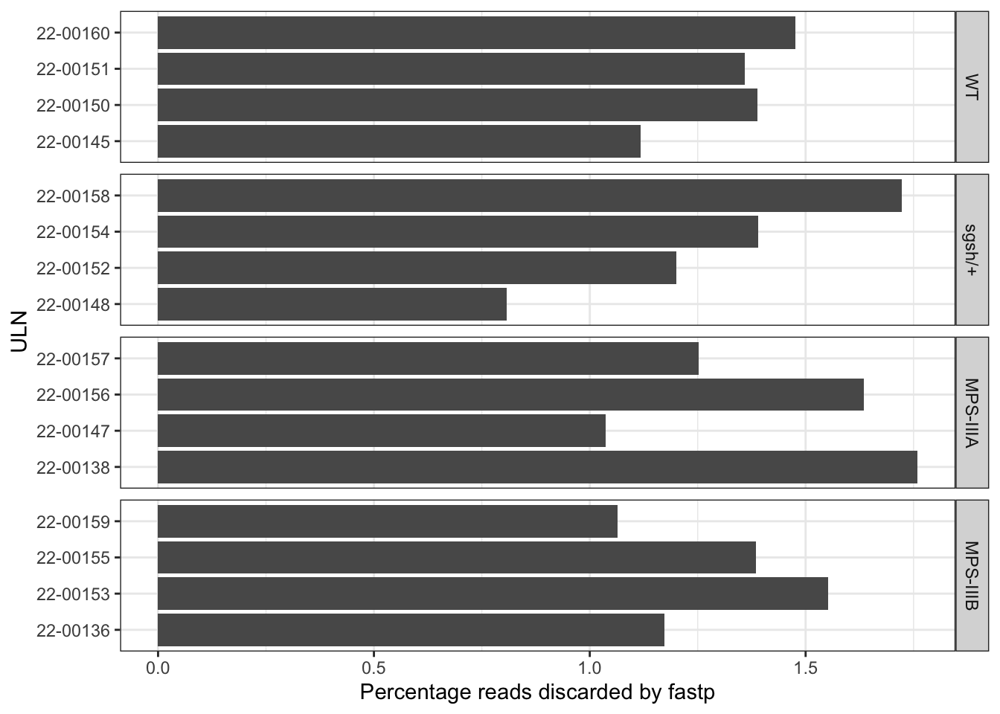
plotBaseQuals(fastqc_trim) +
ggtitle("Read quality after trimming", subtitle = "no apparent differences after trimming")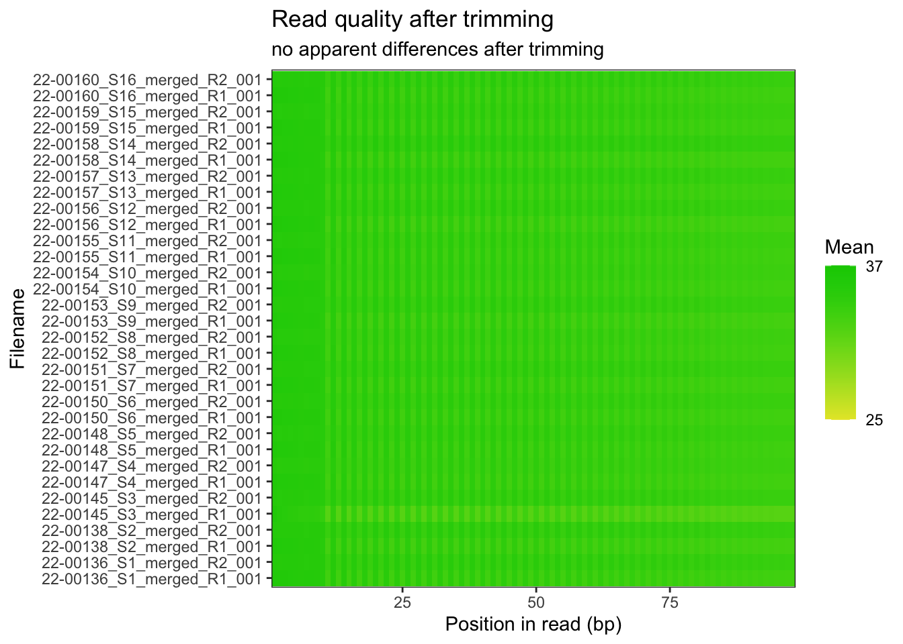
ggarrange(
plotGcContent(
x = fastqc_raw,
plotType = "line",
gcType = "Transcriptome",
species = "Drerio"
) +
theme(legend.position = "none") +
ggtitle("Before fastp"),
plotGcContent(
x = fastqc_trim,
plotType = "line",
gcType = "Transcriptome",
species = "Drerio"
) +
theme(legend.position = "none")+
ggtitle("After fastp")
) 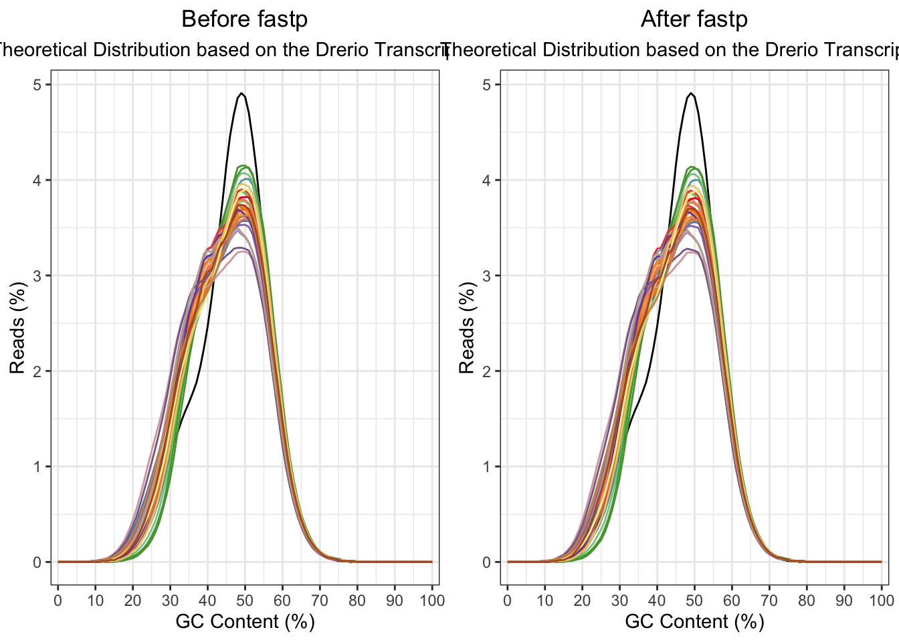
The reads were aligned to the GRCz11 genome using STAR_2.5.2a. The genome index was generated by <Lawson et al. 2020 Elife>link. The majority of reads were aligned uniquely.
fastqc_align <- list.files(
path = "data/fastqc_align",
pattern = "zip",
recursive = TRUE,
full.names = TRUE) %>%
FastqcDataList()list.files("data/starAlignlog", full.names = TRUE) %>%
.[grepl(x = ., pattern = "Log.final.out")] %>%
ngsReports::plotAlignmentSummary(type = "star") +
scale_fill_viridis_d(end = 0.8) +
theme(legend.position = "right") +
ggtitle("Summary of alignment (STAR)",
subtitle = "In all samples, the majority of reads mapped uniquely to the zebrafish genome.")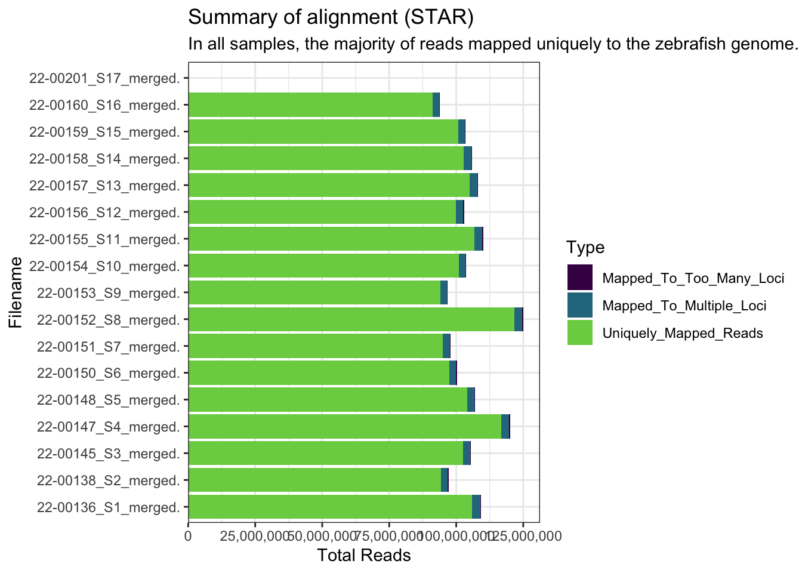
plotBaseQuals(fastqc_align)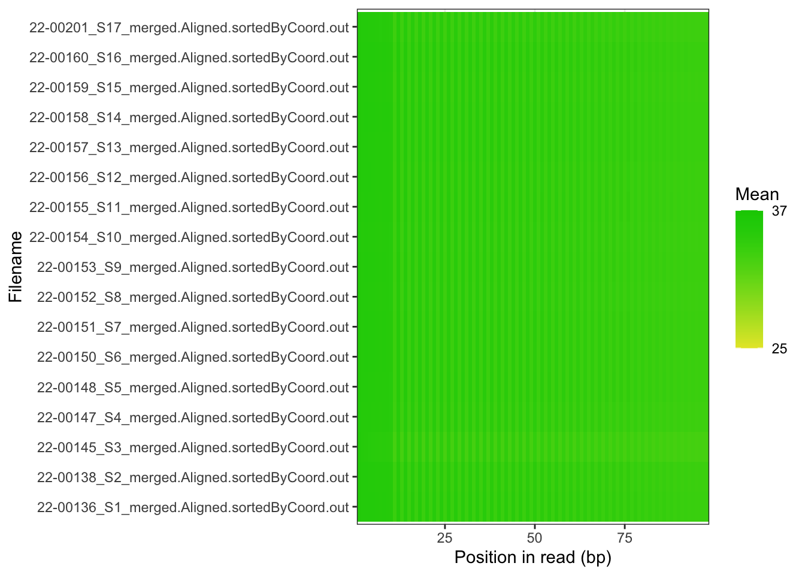
plotGcContent(x = fastqc_align,
plotType = "line",
gcType = "Transcriptome",
species = "Drerio"
) +
theme(legend.position = "none") 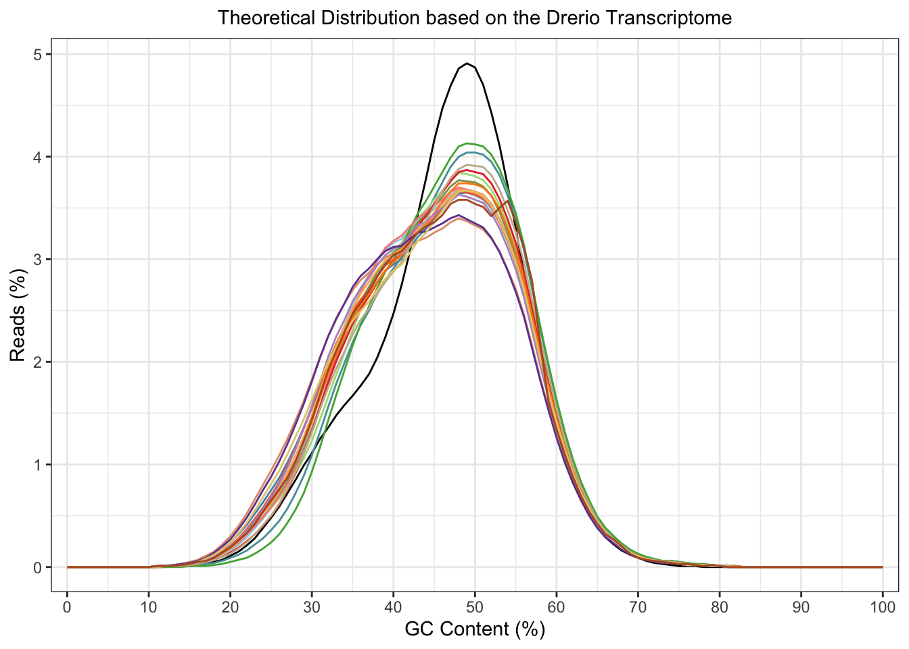
This dataset was processed with UMIs, which allow PCR duplicates to be removed. I did this using umi-tools. After de-duplciation about half of the reads were retained.
fastqc_align_dedup <- list.files(
path = "data/fastqc_dedup",
pattern = "zip",
recursive = TRUE,
full.names = TRUE) %>%
FastqcDataList()readTotals(fastqc_align) %>%
mutate(align = "raw") %>%
bind_rows(readTotals(fastqc_align_dedup) %>%
mutate(align = "dedup")) %>%
mutate(ULN = str_remove(Filename, "_S[0-9]+_merged.+")) %>%
left_join(meta) %>%
ggplot(aes(x = ULN, y = Total_Sequences, fill = align)) +
geom_col(position = "dodge") +
coord_flip() +
scale_fill_viridis_d(end = 0.8) +
scale_y_continuous(labels = comma) +
facet_wrap(~genotype, scales = "free_y", ncol = 1, strip.position = "right")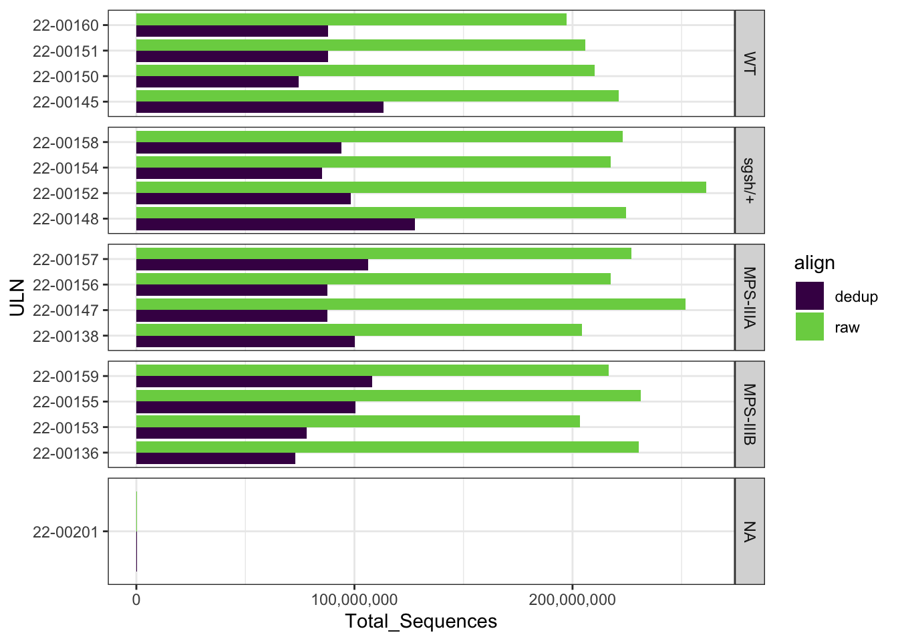
The number of reads aligning to each gene was then counted using featureCounts. The plot below is showing the number of reads aligning to the GRCz11 Ensembl release 98.
FC_summary <- read.delim("data/featurecounts/counts.out.summary")
# Tidy up the colnames
colnames(FC_summary) %<>%
str_remove(pattern = "_S[0-9]+_merged.Aligned.sortedByCoord.dedup.out.bam") %>%
str_remove(pattern = "X04_dedup.bam.") %>%
str_replace(pattern = "[.]", replacement = "-")
FC_summary %>%
gather(key = "ULN", value = "NumReads", starts_with("22")) %>%
left_join(meta) %>%
dplyr::filter(ULN != "22-00201") %>%
as_tibble() %>%
dplyr::filter(NumReads > 0) %>%
ggplot(aes(y = ULN, x = NumReads, fill = Status)) +
geom_col() +
scale_fill_viridis_d(end = 0.8) +
scale_x_continuous(labels = comma) +
facet_wrap(~genotype, scales = "free_y", ncol = 1, strip.position = "right") +
ggtitle("FeatureCounts using Ensembl gtf file")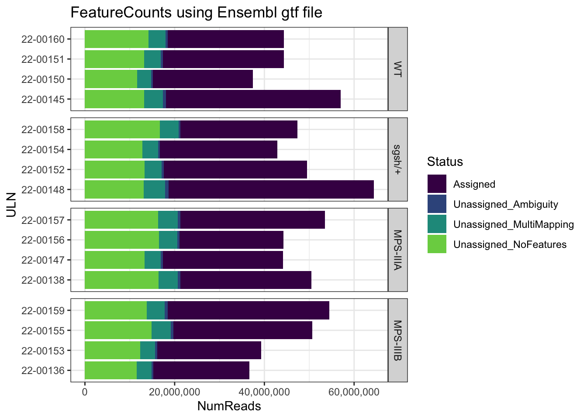
Using the LawsonLab gtf file, the number of reads unassigned due to having no features was massively reduced. Therefore, I will do the rest of the analysis using these annotations.
FC_summary_LL <- read.delim("data/featureCountsLL/counts.out.summary")
# Tidy up the colnames
colnames(FC_summary_LL) %<>%
str_remove(pattern = "_S[0-9]+_merged.Aligned.sortedByCoord.dedup.out.bam") %>%
str_remove(pattern = "X04_dedupLL.bam.") %>%
str_replace(pattern = "[.]", replacement = "-")
FC_summary_LL %>%
gather(key = "ULN", value = "NumReads", starts_with("22")) %>%
left_join(meta) %>%
dplyr::filter(ULN != "22-00201") %>%
as_tibble() %>%
dplyr::filter(NumReads > 0) %>%
ggplot(aes(y = ULN, x = NumReads, fill = Status)) +
geom_col() +
scale_fill_viridis_d(end = 0.8) +
scale_x_continuous(labels = comma) +
facet_wrap(~genotype, scales = "free_y", ncol = 1, strip.position = "right") +
ggtitle("FeatureCounts using LawwsonLab gtf file")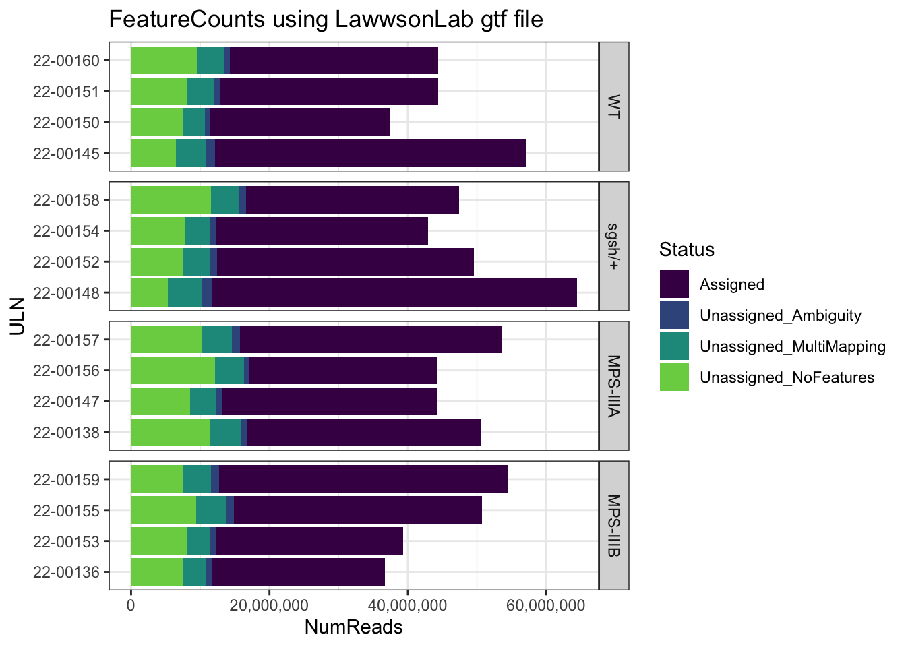
sessionInfo()R version 4.0.2 (2020-06-22)
Platform: x86_64-apple-darwin17.0 (64-bit)
Running under: macOS Mojave 10.14.3
Matrix products: default
BLAS: /Library/Frameworks/R.framework/Versions/4.0/Resources/lib/libRblas.dylib
LAPACK: /Library/Frameworks/R.framework/Versions/4.0/Resources/lib/libRlapack.dylib
locale:
[1] en_AU.UTF-8/en_AU.UTF-8/en_AU.UTF-8/C/en_AU.UTF-8/en_AU.UTF-8
attached base packages:
[1] parallel stats graphics grDevices utils datasets methods
[8] base
other attached packages:
[1] ggpubr_0.4.0 pheatmap_1.0.12 scales_1.1.1
[4] pander_0.6.4 AnnotationHub_2.20.2 BiocFileCache_1.12.1
[7] dbplyr_2.1.1 ngsReports_1.4.2 BiocGenerics_0.34.0
[10] readxl_1.3.1 magrittr_2.0.1 forcats_0.5.1
[13] stringr_1.4.0 dplyr_1.0.7 purrr_0.3.4
[16] readr_1.4.0 tidyr_1.1.3 tibble_3.1.2
[19] ggplot2_3.3.5 tidyverse_1.3.1
loaded via a namespace (and not attached):
[1] backports_1.2.1 workflowr_1.6.2
[3] plyr_1.8.6 lazyeval_0.2.2
[5] BiocParallel_1.22.0 GenomeInfoDb_1.24.2
[7] digest_0.6.27 htmltools_0.5.1.1
[9] fansi_0.5.0 memoise_2.0.0
[11] cluster_2.1.2 openxlsx_4.2.4
[13] Biostrings_2.56.0 modelr_0.1.8
[15] matrixStats_0.59.0 jpeg_0.1-8.1
[17] colorspace_2.0-2 blob_1.2.1
[19] rvest_1.0.0 rappdirs_0.3.3
[21] ggrepel_0.9.1 haven_2.4.1
[23] xfun_0.24 crayon_1.4.1
[25] RCurl_1.98-1.3 jsonlite_1.7.2
[27] zoo_1.8-9 glue_1.4.2
[29] gtable_0.3.0 zlibbioc_1.34.0
[31] XVector_0.28.0 DelayedArray_0.14.1
[33] car_3.0-11 abind_1.4-5
[35] DBI_1.1.1 rstatix_0.7.0
[37] Rcpp_1.0.7 viridisLite_0.4.0
[39] xtable_1.8-4 foreign_0.8-81
[41] flashClust_1.01-2 bit_4.0.4
[43] stats4_4.0.2 DT_0.18
[45] truncnorm_1.0-8 htmlwidgets_1.5.3
[47] httr_1.4.2 RColorBrewer_1.1-2
[49] ellipsis_0.3.2 farver_2.1.0
[51] pkgconfig_2.0.3 sass_0.4.0
[53] utf8_1.2.1 labeling_0.4.2
[55] tidyselect_1.1.1 rlang_0.4.11
[57] reshape2_1.4.4 later_1.2.0
[59] AnnotationDbi_1.50.3 munsell_0.5.0
[61] BiocVersion_3.11.1 cellranger_1.1.0
[63] tools_4.0.2 cachem_1.0.5
[65] cli_3.0.0 generics_0.1.0
[67] RSQLite_2.2.7 broom_0.7.8
[69] evaluate_0.14 fastmap_1.1.0
[71] ggdendro_0.1.22 yaml_2.2.1
[73] knitr_1.33 bit64_4.0.5
[75] fs_1.5.0 zip_2.2.0
[77] mime_0.11 leaps_3.1
[79] xml2_1.3.2 compiler_4.0.2
[81] rstudioapi_0.13 plotly_4.9.4.1
[83] curl_4.3.2 png_0.1-7
[85] interactiveDisplayBase_1.26.3 ggsignif_0.6.2
[87] reprex_2.0.0 bslib_0.2.5.1
[89] stringi_1.6.2 highr_0.9
[91] lattice_0.20-44 Matrix_1.3-4
[93] vctrs_0.3.8 pillar_1.6.1
[95] lifecycle_1.0.0 BiocManager_1.30.16
[97] jquerylib_0.1.4 cowplot_1.1.1
[99] data.table_1.14.0 bitops_1.0-7
[101] httpuv_1.6.1 GenomicRanges_1.40.0
[103] R6_2.5.0 latticeExtra_0.6-29
[105] hwriter_1.3.2 promises_1.2.0.1
[107] ShortRead_1.46.0 rio_0.5.27
[109] IRanges_2.22.2 MASS_7.3-54
[111] assertthat_0.2.1 SummarizedExperiment_1.18.2
[113] rprojroot_2.0.2 withr_2.4.2
[115] GenomicAlignments_1.24.0 Rsamtools_2.4.0
[117] S4Vectors_0.26.1 GenomeInfoDbData_1.2.3
[119] hms_1.1.0 grid_4.0.2
[121] rmarkdown_2.9 carData_3.0-4
[123] git2r_0.28.0 scatterplot3d_0.3-41
[125] Biobase_2.48.0 shiny_1.6.0
[127] lubridate_1.7.10 FactoMineR_2.4